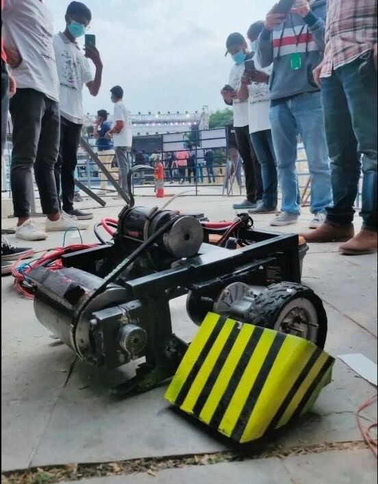
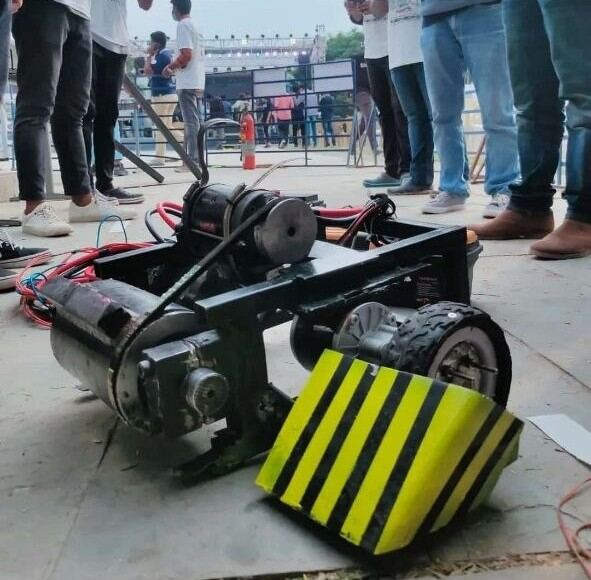
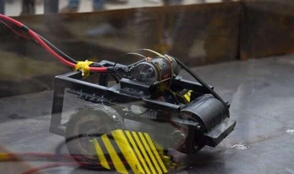
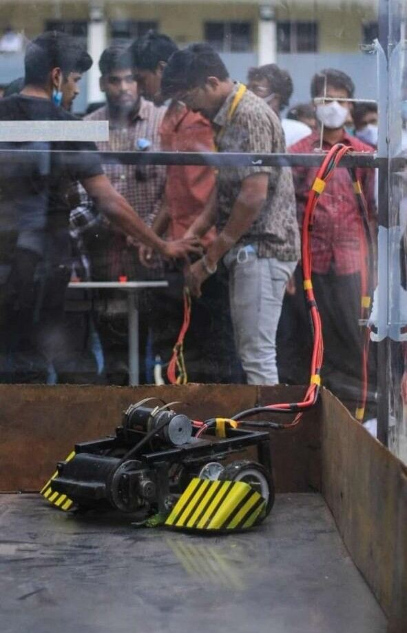
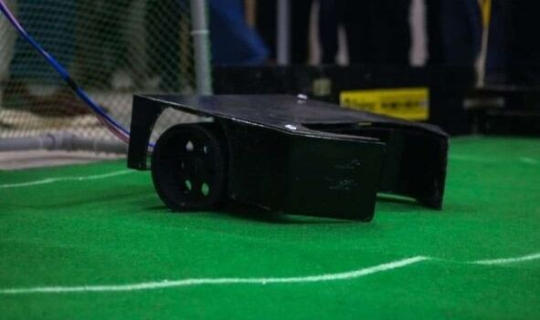

15 / COMBAT ROBOTICS
War Bot
A national-competition combat robot: 200+ build hours, a team of 20, and a 25 kg drum at 1,000 RPM.
- Role
- Build team member
- Context
- National-level robotic competition, Oct – Dec 2021
- Tools
- Weapon drivetrain, impact-resistant structure, high-RPM balancing, power budgeting
- Scope
- A combat vehicle with a spinning drum weapon at the front
- Output
- A competition-ready robot, 200+ hours of build across a team of 20
- Skills
- Weapon drivetrain
- Impact-resistant structure
- High-RPM balancing
- Power budgeting
- Team fabrication
This robotic vehicle took over 200 hours and a team of 20 people to manufacture. It is built for high-grade robotic competitions held at national level.
The weapon is a 25 kg drum mounted at the front, driven to 1,000 RPM. At that speed the stored energy is the whole design problem: the structure has to survive its own weapon as well as the opponent, and the drive has to reach speed without stalling the power budget.





25 kg drum weapon1,000 RPM200+ build hoursTeam of 20
Weapon drivetrainImpact-resistant structureHigh-RPM balancingPower budgeting